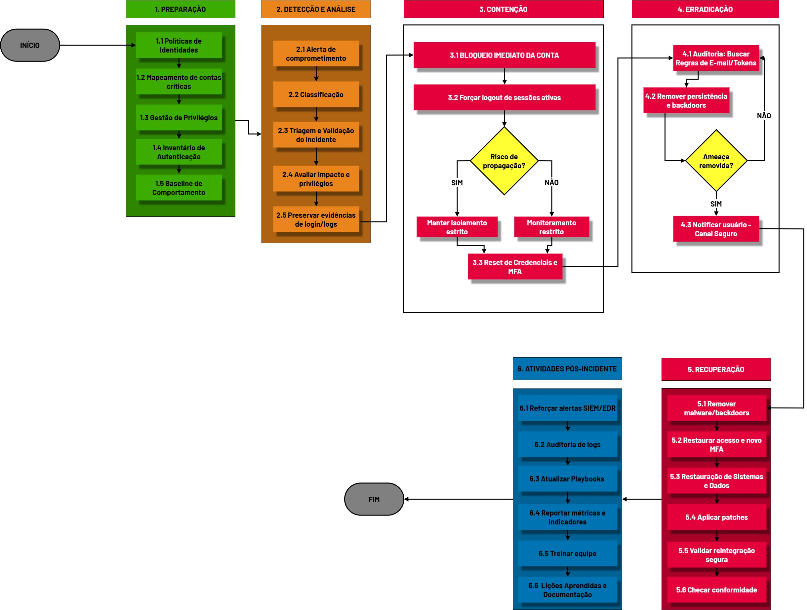
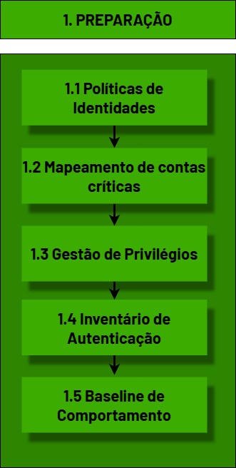
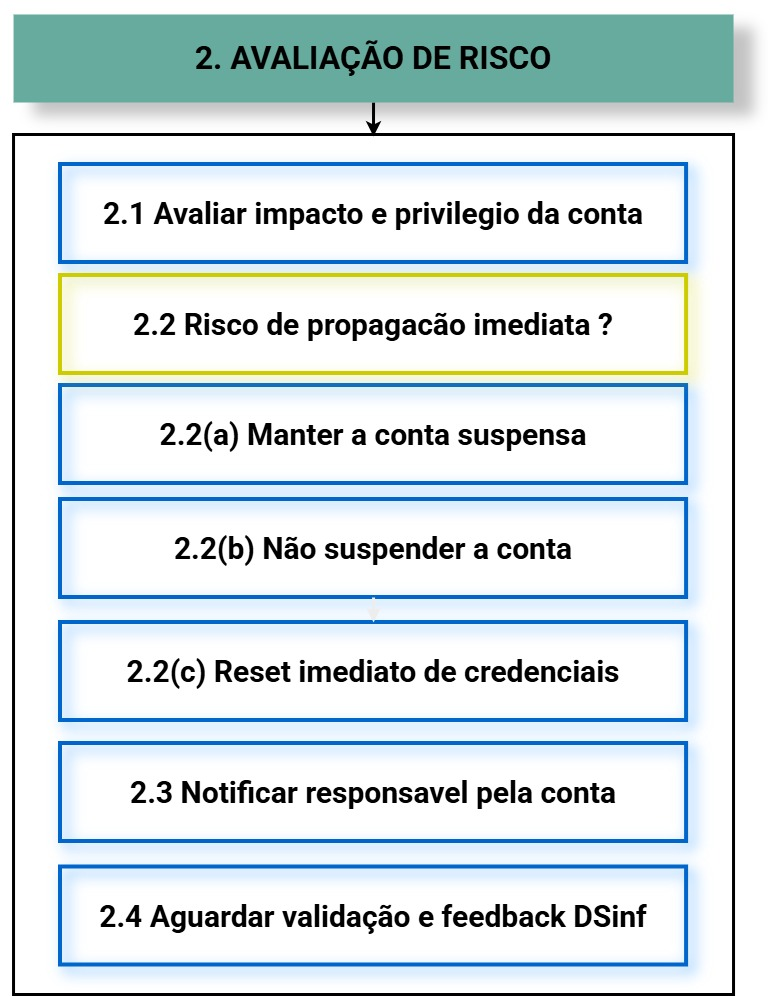

Para um cenário de Comprometimento de Contas (Account Takeover), a aplicação prática das fases da NIST SP 800-61r3 foca em conter o acesso e restaurar a identidade.
FLUXOGRAMA DE DECISÃO

Selecione uma fase abaixo na barra de navegação para ver ações detalhadas e ferramentas.
1. PREPARAÇÃO

Ações Técnicas de Mitigação
MFA Mandatório: Implementar autenticação multi-fator em todos os serviços expostos (SaaS, VPN, SSH).
Hardening de Identidade: Desabilitar protocolos legados (POP3, IMAP, SMTP Auth) que ignoram MFA.
Monitoramento de Login: Configurar alertas para "Impossible Travel" e novos países de acesso.
Ferramentas Recomendadas
Microsoft Entra IDOktaCyberArk PAMDuo SecurityBitwarden
2. DETECÇÃO E ANÁLISE

Investigação de Vetores
Análise de IP: Checar se o IP de origem pertence a uma VPN comercial, Proxy de saída ou rede TOR.
User-Agent: Identificar se o navegador utilizado foge ao padrão do colaborador (ex: Python-requests).
Logs de Auditoria: Buscar por falhas de login consecutivas (Brute Force) seguidas de um sucesso.